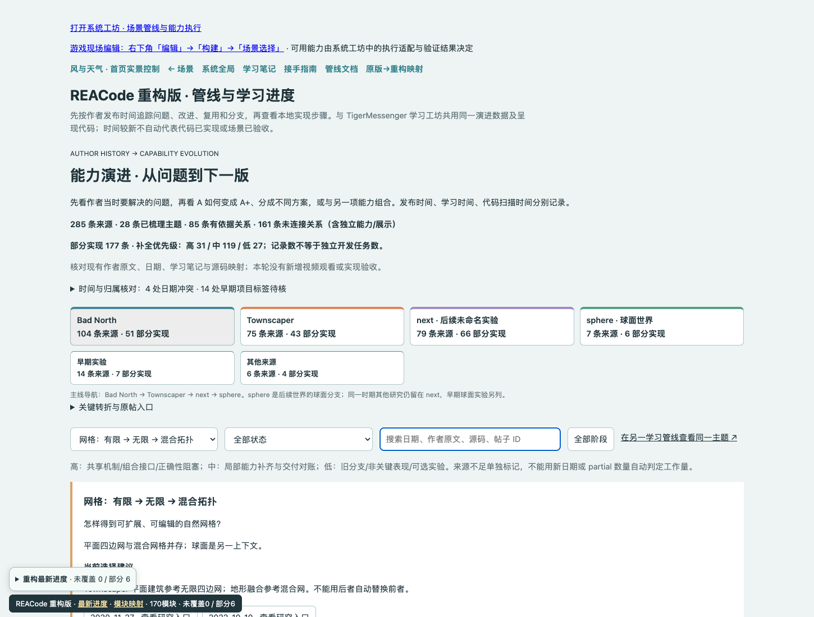
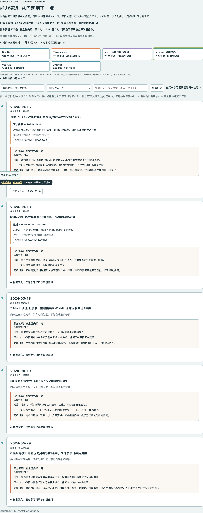
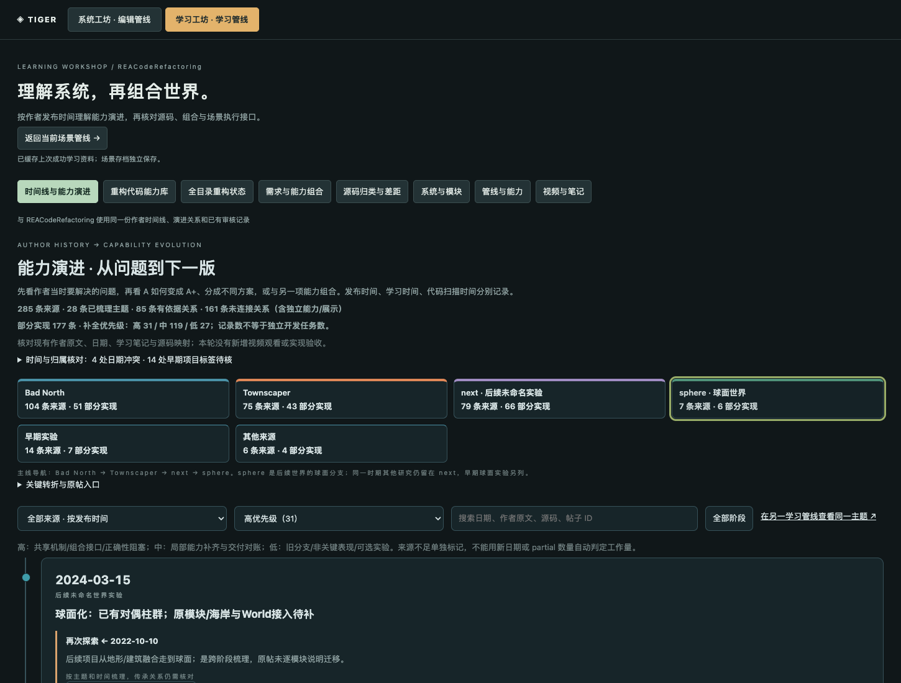
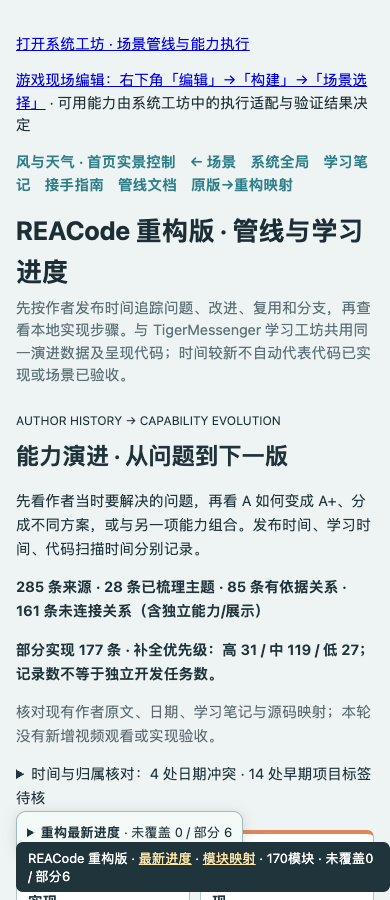
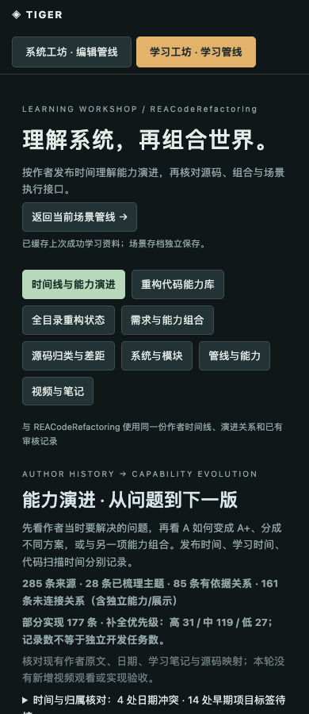

2026-11-14 · 先源库8769验证，再对齐8931学习工坊。实际隔离浏览器通过，五组统一检查通过。
285条来源，28主题、85关系；177部分实现：高31／中119／低27。优先级是补全建议，不是代码完成证明。未新增视频观看，不修改用户存档。
共同资料指纹：sha256:3f9b3af104359c78b8393e97d40b00f7b3411c0fee76304e814277f69e6897bb
实际双端交互回执 · 统一检查 · 数量与冲突清单 · 完整索引与补全队列 · 当前文件指纹





历史首次前身跳转误匹配失败保留于 source-1794636425655/browser.json；后续精确ID匹配修复。原泳道重复条目189处批注对应177唯一partial来源。161无关系记录含独立能力/作品展示，不等于未学习。next没有已确认正式名称，sphere并非作者首次球面实验。